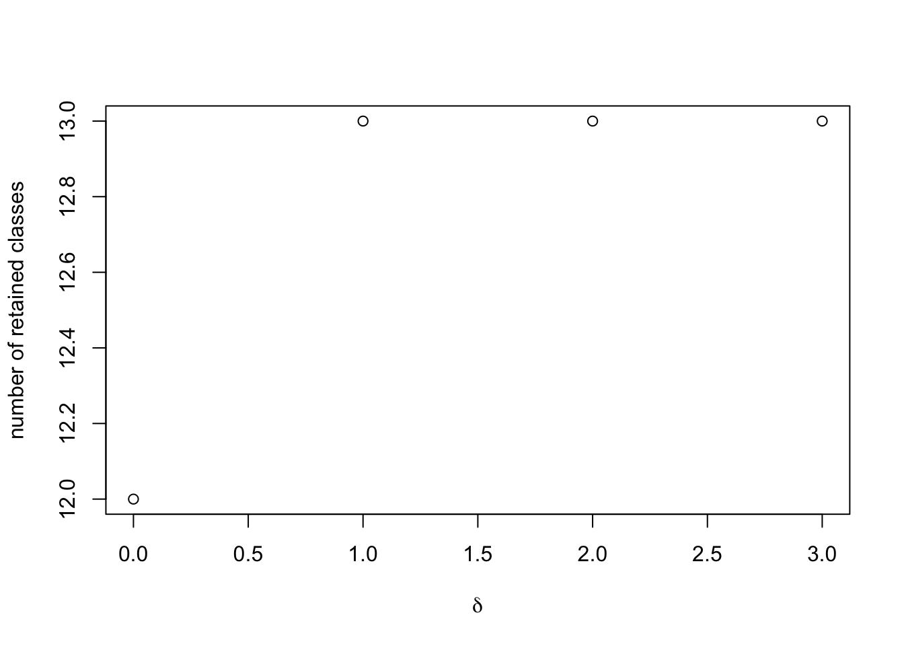

Last updated: 2024-10-29
Checks: 7 0
Knit directory: climb-jin/
This reproducible R Markdown analysis was created with workflowr (version 1.7.1). The Checks tab describes the reproducibility checks that were applied when the results were created. The Past versions tab lists the development history.
Great! Since the R Markdown file has been committed to the Git repository, you know the exact version of the code that produced these results.
Great job! The global environment was empty. Objects defined in the global environment can affect the analysis in your R Markdown file in unknown ways. For reproduciblity it’s best to always run the code in an empty environment.
The command set.seed(20241028) was run prior to running
the code in the R Markdown file. Setting a seed ensures that any results
that rely on randomness, e.g. subsampling or permutations, are
reproducible.
Great job! Recording the operating system, R version, and package versions is critical for reproducibility.
Nice! There were no cached chunks for this analysis, so you can be confident that you successfully produced the results during this run.
Great job! Using relative paths to the files within your workflowr project makes it easier to run your code on other machines.
Great! You are using Git for version control. Tracking code development and connecting the code version to the results is critical for reproducibility.
The results in this page were generated with repository version f72019c. See the Past versions tab to see a history of the changes made to the R Markdown and HTML files.
Note that you need to be careful to ensure that all relevant files for
the analysis have been committed to Git prior to generating the results
(you can use wflow_publish or
wflow_git_commit). workflowr only checks the R Markdown
file, but you know if there are other scripts or data files that it
depends on. Below is the status of the Git repository when the results
were generated:
Ignored files:
Ignored: .Trash/
Ignored: .android/
Ignored: Desktop/climb-jin/.DS_Store
Ignored: Desktop/climb-jin/analysis/.DS_Store
Ignored: Desktop/climb-jin/analysis/pairwise_fitting_cache/
Ignored: env_name/
Ignored: lemon-x.y.z/
Untracked files:
Untracked: .CFUserTextEncoding
Untracked: .DS_Store
Untracked: .RData
Untracked: .RDataTmp
Untracked: .Rapp.history
Untracked: .Rhistory
Untracked: .Xauthority
Untracked: .anaconda/
Untracked: .anyconnect
Untracked: .bash_history
Untracked: .bash_profile
Untracked: .bash_profile.bak
Untracked: .bash_sessions/
Untracked: .cache/
Untracked: .cisco/
Untracked: .conda/
Untracked: .condarc
Untracked: .config/
Untracked: .continuum/
Untracked: .cups/
Untracked: .dropbox/
Untracked: .eclipse/
Untracked: .gitconfig
Untracked: .ipynb_checkpoints/
Untracked: .ipython/
Untracked: .julia/
Untracked: .juliaup/
Untracked: .jupyter/
Untracked: .local/
Untracked: .matplotlib/
Untracked: .oracle_jre_usage/
Untracked: .p2/
Untracked: .r/
Untracked: .snipaste/
Untracked: .subversion/
Untracked: .tcshrc
Untracked: .tooling/
Untracked: .vscode/
Untracked: .wns/
Untracked: .xonshrc
Untracked: .zsh_history
Untracked: .zsh_sessions/
Untracked: .zshrc
Untracked: 511hw3.Rmd
Untracked: =0.29.21
Untracked: =0.4.0
Untracked: Applications/
Untracked: CLIMB.zip
Untracked: Calibre Library/
Untracked: Creative Cloud Files Personal Account lydia0425@hotmail.com 3BE21D79656B7BC80A495F8C@AdobeID/
Untracked: Creative Cloud Files lydiajin@colostate.edu 5a37fd827490aa859a1a523ab35d0252fdf8d2d8259bfef57b7d4de857d68da6/
Untracked: Desktop/.DS_Store
Untracked: Desktop/319.pdf
Untracked: Desktop/517/
Untracked: Desktop/555/
Untracked: Desktop/7788/
Untracked: Desktop/CLIMB/
Untracked: Desktop/File/
Untracked: Desktop/Screenshot 2024-10-25 at 09.41.56.png
Untracked: Desktop/Screenshot 2024-10-25 at 09.43.11.png
Untracked: Desktop/Screenshot 2024-10-25 at 09.43.48.png
Untracked: Desktop/Screenshot 2024-10-29 at 10.47.50.png
Untracked: Desktop/climb-jin/.Rprofile
Untracked: Desktop/climb-jin/.gitattributes
Untracked: Desktop/climb-jin/.gitignore
Untracked: Desktop/climb-jin/README.md
Untracked: Desktop/climb-jin/_workflowr.yml
Untracked: Desktop/climb-jin/analysis/about.Rmd
Untracked: Desktop/climb-jin/analysis/candidate_latent_classes.Rmd
Untracked: Desktop/climb-jin/analysis/license.Rmd
Untracked: Desktop/climb-jin/climb-jin.Rproj
Untracked: Desktop/climb-jin/code/
Untracked: Desktop/climb-jin/data/
Untracked: Desktop/climb-jin/output/
Untracked: Desktop/climb-jin/pwfits.Rdata
Untracked: Desktop/climb-page/
Untracked: Desktop/reading/
Untracked: Documents
Untracked: Downloads
Untracked: Dropbox/
Untracked: HW5code.Rmd
Untracked: HW5code.pdf
Untracked: HW6-code.Rmd
Untracked: HW6-code.pdf
Untracked: IdeaProjects/
Untracked: Library/
Untracked: MATLAB-Drive/
Untracked: Manifest.toml
Untracked: Movies/
Untracked: Music/
Untracked: Pictures/
Untracked: Project.toml
Untracked: Public/
Untracked: PycharmProjects/
Untracked: Sigma_chain_py.jld
Untracked: Sigma_chain_test.jld
Untracked: Sigma_chains_
Untracked: Sigma_chains_1
Untracked: Sigma_chains_1.csv
Untracked: Sigma_chains_10
Untracked: Sigma_chains_10.csv
Untracked: Sigma_chains_11
Untracked: Sigma_chains_11.csv
Untracked: Sigma_chains_12
Untracked: Sigma_chains_12.csv
Untracked: Sigma_chains_13
Untracked: Sigma_chains_13.csv
Untracked: Sigma_chains_2
Untracked: Sigma_chains_2.csv
Untracked: Sigma_chains_21.txt
Untracked: Sigma_chains_3
Untracked: Sigma_chains_3.csv
Untracked: Sigma_chains_4
Untracked: Sigma_chains_4.csv
Untracked: Sigma_chains_423.txt
Untracked: Sigma_chains_5
Untracked: Sigma_chains_5.csv
Untracked: Sigma_chains_6
Untracked: Sigma_chains_6.csv
Untracked: Sigma_chains_7
Untracked: Sigma_chains_7.csv
Untracked: Sigma_chains_8
Untracked: Sigma_chains_8.csv
Untracked: Sigma_chains_9
Untracked: Sigma_chains_9.csv
Untracked: Sigma_chains_reshaped.txt
Untracked: Sigma_mvn_test.csv
Untracked: Sigma_star.csv
Untracked: Sigma_star_test.csv
Untracked: Sigma_star_test_logl.csv
Untracked: Sigma_test.csv
Untracked: Sites/
Untracked: Untitld.Rmd
Untracked: Untitld.docx
Untracked: Untitled.Rmd
Untracked: Untitled.log
Untracked: Untitled.tex
Untracked: XFeat_training_example.ipynb
Untracked: accelerated_features/
Untracked: acpt_rate_chain.txt
Untracked: anaconda3/
Untracked: cgibbs.ipynb
Untracked: chain.csv
Untracked: chain_test.jld
Untracked: climb-page/
Untracked: constrained_distributions.ipynb
Untracked: consulting.Rmd
Untracked: curr_Sigmas_test.csv
Untracked: eclipse-workspace/
Untracked: eclipse/
Untracked: h_mvn_test.csv
Untracked: helpers.ipynb
Untracked: hyp.RData
Untracked: hyp.csv
Untracked: hyp.rds
Untracked: hyp_Psi0.RData
Untracked: hyp_alpha.RData
Untracked: hyp_kappa0.RData
Untracked: hyp_mu0.RData
Untracked: iCloud Drive (Archive)/
Untracked: image-matching-webui/
Untracked: julia/
Untracked: labels.RData
Untracked: labels_test.csv
Untracked: lgf.txt
Untracked: lgf1.txt
Untracked: lgf2.txt
Untracked: lgf_human.txt
Untracked: lgf_human1.txt
Untracked: lgf_human2.txt
Untracked: ll_mult_curr.csv
Untracked: ll_mult_star.csv
Untracked: matlab_crash_dump.14732-1
Untracked: matlab_crash_dump.17960-1
Untracked: matlab_crash_dump.33550-1
Untracked: matlab_crash_dump.411-1
Untracked: miniconda3/
Untracked: minimal_example.ipynb
Untracked: mosta.ipynb
Untracked: mu0_mvn_test.csv
Untracked: mu0_test.csv
Untracked: mu_chain_py.jld
Untracked: mu_chain_test.csv
Untracked: mu_chain_test.jld
Untracked: mu_chains.csv
Untracked: mu_chains.txt
Untracked: mu_chains_1.csv
Untracked: mu_chains_10.csv
Untracked: mu_chains_11.csv
Untracked: mu_chains_12.csv
Untracked: mu_chains_13.csv
Untracked: mu_chains_2.csv
Untracked: mu_chains_3.csv
Untracked: mu_chains_3.txt
Untracked: mu_chains_4.csv
Untracked: mu_chains_5.csv
Untracked: mu_chains_6.csv
Untracked: mu_chains_7.csv
Untracked: mu_chains_8.csv
Untracked: mu_chains_9.csv
Untracked: mu_chains_reshaped.txt
Untracked: mu_hats_test.csv
Untracked: occ.csv
Untracked: opt/
Untracked: out.csv
Untracked: plotters.ipynb
Untracked: prob_curr.csv
Untracked: prob_star.csv
Untracked: processors.ipynb
Untracked: prop_chain
Untracked: prop_chain.csv
Untracked: prop_chain.txt
Untracked: prop_chain_py.csv
Untracked: pwfits.Rdata
Untracked: retained_classes.RData
Untracked: run_mcmc.ipynb
Untracked: run_mcmc_pre.ipynb
Untracked: running_mcmc-Copy1.ipynb
Untracked: running_mcmc.ipynb
Untracked: running_mcmc_Aug6.ipynb
Untracked: running_mcmc_Sep2-Copy1.ipynb
Untracked: running_mcmc_Sep2.ipynb
Untracked: sim.RData
Untracked: simdat.RData
Untracked: xfeat+lg_torch_hub.ipynb
Untracked: xfeat_matching.ipynb
Untracked: xfeat_torch_hub.ipynb
Untracked: z_chain
Untracked: z_chain.csv
Untracked: z_chain.txt
Untracked: z_chain_py.csv
Untracked: z_test
Untracked: z_test.csv
Untracked: z_test_logl.csv
Untracked: zout_test.csv
Note that any generated files, e.g. HTML, png, CSS, etc., are not included in this status report because it is ok for generated content to have uncommitted changes.
These are the previous versions of the repository in which changes were
made to the R Markdown
(Desktop/climb-jin/analysis/priors.Rmd) and HTML
(Desktop/climb-jin/docs/priors.html) files. If you’ve
configured a remote Git repository (see ?wflow_git_remote),
click on the hyperlinks in the table below to view the files as they
were in that past version.
| File | Version | Author | Date | Message |
|---|---|---|---|---|
| Rmd | f72019c | Jin Peng | 2024-10-29 | Add analysis |
We are now just about ready to set up our MCMC. First, we need to determine the hyperparameters in the priors of our Gaussian mixture. These are all calculated in an empirical Bayesian manner – that is, we can recycle information from the pairwise fits to inform our priors in the full-information mixture. This task can be split into 2 sub-tasks:
computing the prior hyperparameters for the cluster mixing weights
computing every other hyperparameter
The former is the most essential, as it helps us remove more candidate latent classes, ensuring that the number of clusters is fewer than the number of observations. An important note: this is the only step of CLIMB that requires some sort of human intervention, but it does need to happen. A threshold, called \(\delta\) in the manuscript, determines how strict one is about including classes in the final model. \(\delta\in\{0,1,\ldots,\binom{D}{2}\}\). We will get into selecting \(\delta\) shortly.
To get the prior weights on each candidate latent class, use the
function get_prior_weights(). This function defaults to the
settings used in the CLIMB manuscript. The user can specify:
reduced_classes: the matrix of candidate latent
classes generated by get_reduced_classes()
fits: the list of pairwise fits generated by
get_pairwise_fits()
parallel: logical specifying if the analysis should
be run in parallel (defaults to FALSE)
ncores: if in parallel, how many cores to use.
Defaults to 20.
delta: this is the range of thresholds to try, but
it will defaults to a sequence of all possible thresholds.
NB: while parallelization is always available here,
it is not always necessary. Speed of this portion depends on sample
size, dimension, and the number of candidate latent classes (in
reduced_classes).
Now, we are ready to compute the prior weights.
# Read in the candidate latent classes produced in the last step
reduced_classes <- read.table("output/red_class.txt", sep = "\t")
# load in the pairwise fits from the first step
# (in this example case, I am simply loading the data from the package)
data("fits")
# Compute the prior weights
prior_weights <- get_prior_weights(reduced_classes, fits, parallel = FALSE)prior_weights is a list of vectors. Each vector
corresponds to the computed prior weights for a given value of \(\delta\). Here,
prior_weights[[j]] corresponds to the prior weights when
\(\delta = j-1\).
We can plot how the number of latent classes included in the final model changes as we relax \(\delta\).
# this is just grabbing the sample size and dimension
n <- length(fits[[1]]$cluster)
D <- as.numeric(strsplit(tail(names(fits),1), "_")[[1]][2])
# to avoid degenerate distributions, we will only keep clusters such that the prior
# weight times the sample size is greater than the dimension.
plot(
0:choose(D,2),
sapply(prior_weights, function(X)
sum(X * n > D)),
ylab = "number of retained classes",
xlab = expression(delta))
This toy example is much cleaner than a real data set, but typically
we expect to see that, as we relax \(\delta\) away from 0, more classes are
included in the final model. We have not identified a uniformly
best way to select \(\delta\); a
decent rule of thumb has simply been to include as many classes as one
can while retaining computational feasibility, and selecting the
smallest value of \(\delta\)
that gives this result. In this toy example, we might as well retain all
classes, and thus select the prior weights corresponding to \(\delta = 1\). Let’s store that in the
variable p.
# Select out prior weights for delta = 1
p <- prior_weights[[2]]
# Filter out classes which have too small of a prior weight
# (In this toy example, we actually retain everything,
# but this is not typical for higher-dimensional/empirical analyses)
retained_classes <- reduced_classes[p * n > D, ]
p <- p[p * n > D,]
# save the retained classes for downstream analysis
readr::write_tsv(retained_classes, file = "output/retained_classes.txt", col_names = FALSE)Now that the human intervention is over, the rest is simple. Just use
the function get_hyperparameters() to compute empirical
estimates of the remaining prior hyperparameters.
# load the data back in
data("sim")
# obtain the hyperparameters
hyp <- get_hyperparameters(sim$data, fits, retained_classes, p)
# view the output
str(hyp)List of 4
$ Psi0 : num [1:3, 1:3, 1:13] 0.8 0 0.491 0 1 ...
$ mu0 : num [1:13, 1:3] 2.47 2.47 2.47 0 0 ...
$ alpha : num [1:13] 0.1123 0.1458 0.0214 0.1008 0.0521 ...
$ kappa0: num [1:13] 168 219 32 151 78 164 166 98 44 147 ...hyp$kappa0 controls the informativity of the priors. To
reduce informativity, one can make the elements of kappa0
smaller (but still larger than \(D\)!).
For example, you could use something like
hyp$kappa0 <- rep(10, D), instead of the automatic
choice (proportional to hyp$alpha) which is returned from
the get_hyperparameters function.
We can save these hyperparameters for the next step in the analysis:
save(hyp, file = "output/hyperparameters.Rdata")After these analyses, we have a model to describe our data, and are ready to run the MCMC.
print(sessionInfo())R version 4.3.2 (2023-10-31)
Platform: x86_64-apple-darwin20 (64-bit)
Running under: macOS Sonoma 14.5
Matrix products: default
BLAS: /Library/Frameworks/R.framework/Versions/4.3-x86_64/Resources/lib/libRblas.0.dylib
LAPACK: /Library/Frameworks/R.framework/Versions/4.3-x86_64/Resources/lib/libRlapack.dylib; LAPACK version 3.11.0
locale:
[1] en_US.UTF-8/en_US.UTF-8/en_US.UTF-8/C/en_US.UTF-8/en_US.UTF-8
time zone: America/New_York
tzcode source: internal
attached base packages:
[1] stats graphics grDevices utils datasets methods base
other attached packages:
[1] CLIMB_1.1.0 workflowr_1.7.1
loaded via a namespace (and not attached):
[1] sass_0.4.8 utf8_1.2.4 generics_0.1.3
[4] tidyr_1.3.1 stringi_1.8.3 hms_1.1.3
[7] digest_0.6.34 magrittr_2.0.3 evaluate_0.23
[10] iterators_1.0.14 mvtnorm_1.2-4 fastmap_1.1.1
[13] plyr_1.8.9 foreach_1.5.2 doParallel_1.0.17
[16] rprojroot_2.0.4 jsonlite_1.8.8 processx_3.8.3
[19] whisker_0.4.1 brio_1.1.4 ps_1.7.6
[22] promises_1.2.1 httr_1.4.7 purrr_1.0.2
[25] fansi_1.0.6 codetools_0.2-19 jquerylib_0.1.4
[28] abind_1.4-5 cli_3.6.2 crayon_1.5.2
[31] rlang_1.1.3 bit64_4.0.5 LaplacesDemon_16.1.6
[34] cachem_1.0.8 yaml_2.3.8 tools_4.3.2
[37] parallel_4.3.2 tzdb_0.4.0 dplyr_1.1.4
[40] httpuv_1.6.14 JuliaCall_0.17.5 vctrs_0.6.5
[43] R6_2.5.1 lifecycle_1.0.4 git2r_0.33.0
[46] stringr_1.5.1 bit_4.0.5 fs_1.6.3
[49] vroom_1.6.5 pkgconfig_2.0.3 callr_3.7.5
[52] pillar_1.9.0 bslib_0.6.1 later_1.3.2
[55] glue_1.7.0 Rcpp_1.0.12 highr_0.10
[58] xfun_0.42 tibble_3.2.1 tidyselect_1.2.0
[61] rstudioapi_0.15.0 knitr_1.45 htmltools_0.5.7
[64] rmarkdown_2.25 testthat_3.2.1 readr_2.1.5
[67] compiler_4.3.2 getPass_0.2-4
sessionInfo()R version 4.3.2 (2023-10-31)
Platform: x86_64-apple-darwin20 (64-bit)
Running under: macOS Sonoma 14.5
Matrix products: default
BLAS: /Library/Frameworks/R.framework/Versions/4.3-x86_64/Resources/lib/libRblas.0.dylib
LAPACK: /Library/Frameworks/R.framework/Versions/4.3-x86_64/Resources/lib/libRlapack.dylib; LAPACK version 3.11.0
locale:
[1] en_US.UTF-8/en_US.UTF-8/en_US.UTF-8/C/en_US.UTF-8/en_US.UTF-8
time zone: America/New_York
tzcode source: internal
attached base packages:
[1] stats graphics grDevices utils datasets methods base
other attached packages:
[1] CLIMB_1.1.0 workflowr_1.7.1
loaded via a namespace (and not attached):
[1] sass_0.4.8 utf8_1.2.4 generics_0.1.3
[4] tidyr_1.3.1 stringi_1.8.3 hms_1.1.3
[7] digest_0.6.34 magrittr_2.0.3 evaluate_0.23
[10] iterators_1.0.14 mvtnorm_1.2-4 fastmap_1.1.1
[13] plyr_1.8.9 foreach_1.5.2 doParallel_1.0.17
[16] rprojroot_2.0.4 jsonlite_1.8.8 processx_3.8.3
[19] whisker_0.4.1 brio_1.1.4 ps_1.7.6
[22] promises_1.2.1 httr_1.4.7 purrr_1.0.2
[25] fansi_1.0.6 codetools_0.2-19 jquerylib_0.1.4
[28] abind_1.4-5 cli_3.6.2 crayon_1.5.2
[31] rlang_1.1.3 bit64_4.0.5 LaplacesDemon_16.1.6
[34] cachem_1.0.8 yaml_2.3.8 tools_4.3.2
[37] parallel_4.3.2 tzdb_0.4.0 dplyr_1.1.4
[40] httpuv_1.6.14 JuliaCall_0.17.5 vctrs_0.6.5
[43] R6_2.5.1 lifecycle_1.0.4 git2r_0.33.0
[46] stringr_1.5.1 bit_4.0.5 fs_1.6.3
[49] vroom_1.6.5 pkgconfig_2.0.3 callr_3.7.5
[52] pillar_1.9.0 bslib_0.6.1 later_1.3.2
[55] glue_1.7.0 Rcpp_1.0.12 highr_0.10
[58] xfun_0.42 tibble_3.2.1 tidyselect_1.2.0
[61] rstudioapi_0.15.0 knitr_1.45 htmltools_0.5.7
[64] rmarkdown_2.25 testthat_3.2.1 readr_2.1.5
[67] compiler_4.3.2 getPass_0.2-4